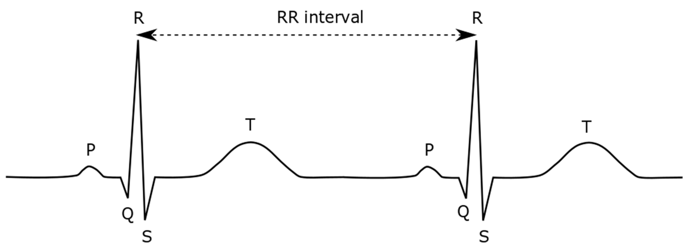
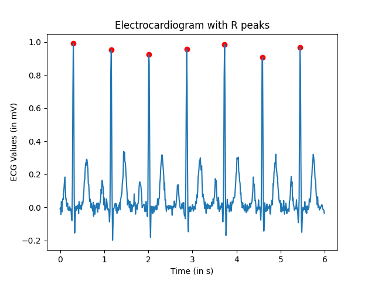

Assignment3
📝 Worth: 7 %
🎯 Learning Objectives
Create a list to store multiple values
Plot lists using
matplotlibRead data from a Comma Separated Values (.csv) file
Develop an algorithm to detect peaks
Context: Heart Beats ❤️
As the heart pumps blood through the body, it emits an electric signal which can be measured, amplified and displayed. This is what we call an electrocardiogram, each heart beat is characterized by a the cardiac cycle made up of different waves named P wave, QRS complex and the T wave as shown below. They offer various medical insights on the patient’s health.

Part 1: Plotting the ECG
🗓️ Due: As per Lea.
📥 Submission:
📝 Specific Instructions
The structure of this assignment will be different than the Assignment2:
Download and extract the starter code.
You will be working within two python files:
my_functions.py: Where all the functions should be definedpart1.py: This is where themain()function is calling the other functions
Keep both files in the same folder
I added an
importstatement inpart1.py, please DO NOT remove this linefrom my_functions import *- the
*means import all the functions defined in this file.
- the
As usual, do not rename the files, respect each function name and its parameter list
Make sure Matplotlib is installed, if not follow these instructions
Task
In part1.py, you are given a sample ecg containing 500 heart signals measured in milivolts (mV). The sampling rate is 360 Hz, which means 360 samples were measured every second. The goal is to plot the ecg_values over time_values and save this figure.
** In my_functions.py, write the following functions** :
Write a function create_time_axis()
Input parameters:
ecg_values: A list of floats representing the ecg values (in mV)
sampling_rate: A float representing the rate at which the samples were measured (in Hz)
Return:
A list of time values in seconds
It should have the same length as the
ecg_valueslist.It should start at
0seconds.Increase by a constant time interval of
1 / sampling_rateseconds between consecutive values.Maintain the same order as the original ECG measurements, ensuring that each time value corresponds to its respective ECG sample.
For example, suppose
sampling_rate = 360andecg_valuescontains 500 measurements.Since 360 samples are recorded every second, the time interval between consecutive samples is:
\(\Delta t = \frac{1}{360} \approx 0.00278 \text{ seconds}\)
The resulting time values should be : \([0, \frac{1}{360}, \frac{2}{360}, \frac{3}{360}, ..., \frac{i}{360}, ... , \frac{499}{360}]\)
Test
Call the function in main() in the part1.py:
def main():
ecg = [-0.955, -0.91, -0.895,...]
time_values = create_time_values(ecg_values=ecg, sampling_rate=SAMPLING_RATE)
print(time_values)
print(len(time_values))Expected output:
[0, 0.002777777777777778, 0.005555555555555556, 0.008333333333333333, ...]
500Write a function plot_ecg()
Input parameters:
ecg_values: list of floats of ecg readingstime_values: list of floats of the secondsoutput_filename: the filename under which the graph image will be saved.show_graph: A boolean, when set toTruethe figure should be shown on the screen, otherwise, it should not be shown.
Return: No return
Task:
Plot the
ecg_valuesversus thetime_valuesApply appropriate styling using Matplotlib:
- Add a title using
plt.title() - Add an x axis title using
plt.xlabel() - Add a y axis title using
plt.ylabel() - Add a grid using
plt.grid(True)
- Add a title using
Save the graph under
output_filenameusingplt.savefig()If the boolean
show_graphisTrue, display the figure withplt.show()Close the figure with
plt.close()
Test
Call the function in the main() in the part1.py:
def main():
# previous lines...
plot_ecg(ecg, time_values, "part1_ecg.png", True)Show your graph to your teacher
Submit your code and your graph on Gradescope.
Part 2: Detecting R peaks
🗓️ Due: Before next class.
📥 Submission:
📝 Specific Instructions
Download and extract the starter code.
Extract the ZIP folder for Part 2.
Make sure you have the following files in the same folder:
part2.py: This is the main program you will work on for Part 2.my_functions.py: Continue using the same file you created in Part 1.ecg.csv: The dataset containing the ECG samples. This is synthetic data generated with the help of an AI tool.part1.py: Keep this file for reference. You will not need to modify it.
In
part2.y, you are given functions to read theecg.csv, feel free to look at those to better understand how a program can load data from a file.Do not remove those lines or anything above this:
import csv from my_functions import * SAMPLING_RATE:float = 100 FILENAME:str = 'ecg.csv' def convert_to_floats(row:list[str])-> list[float]: # some lines of code... def read_data(csv_filename:str)->list[float]: # some lines of code... def main(): ecg_values = read_data(FILENAME)Do not remove the last two lines of the file either:
if __name__ =='__main__': main()
Your Task
In this final part of the assignment, we will focus on calculating the heart rate which is obtained by calculating the number of R peaks that occur per minute.

Alternatively, if the average time interval (in s) between two R peaks is obtained \(\overline{RR_{interval}}\), the heart rate in beats per minute can be calculated using the sampling rate \(f_s\) in Hz (samples per second). \[ Heart Rate = \frac{60}{\overline{RR_{interval}}} \]
Implement an algorithm to scan the ECG signal and identify the indices of the R peaks. You can safely assume that high-amplitude impulses in the signal correspond to R peaks.
Here are functions to help you accomplish that:
Write a function is_local_maximum()
Input parameters:
ecg_values: list of readingstest_index: index of a reading that could be a local maximum
Returns:
True: if it’s a local maximum (it’s value being larger than the previous value and the next value)False: if this reading is not a local maximum
Warning and things to consider:
Are there any constraints on
ito avoid getting an index out of range error?Return
Falseifimight cause an index out of range.
Write a function find_r_peaks()
Input parameters:
ecg_values: list of ecg signal values.time_values: list of time values in secondsthreshold_ratio: A float from0to1representing the minimum threshold of an R peak relative to the global maximum value of the ecg signal. It’s set to0.5by default, but should be finetuned experimentally.min_timelapse: A float representing the minimum timelapse between 2 R peaks. Is set to0.0833seconds by default, but should be finetuned experimentally.
Returns:
peaks: list of indices corresponding to the detected R peaks in the signal. (Indices NOT values! )
Guidelines to build the algorithm
- An R peak is a local maximum.
- You can safely assume that high amplitude peaks above or equal to
threshold*maximumwheremaximumis the global max of the signal are R peaks - There cannot be two consecutive R peaks within
min_timelapse(two R peaks cannot be too close to eachother).
Warning and things to keep in mind
- Which indices can you safely pass to
is_local_maximum()? - To check condition 3, what do you need to remember as you go through the signal? What should it be when no peak has been found yet?
Write a function plot_ecg_peaks()
Input parameters
ecg_values: list of ecg readings of a given patientpeaks: list of indices of the R peakssampling_rate: the number of samples taken per second (in Hz)filename: the filename under which the graph image will be saved.
Task
You must plot the ECG signal versus time and highlight the detected peaks using a different marker (e.g., red dots). Apply appropriate styling using Matplotlib.
Testing
Call the functions in the part2.py file inside the main() function and visually ensure that the algorithm correctly identifies all the R peaks for the signal assigned to you. Save the figure with the peaks.
def main():
ecg = read_data(FILENAME)
time = create_time_values(ecg, SAMPLING_RATE)
# some more lines
r_peaks = find_r_peaks(ecg, time, 0.5, 0.0833)
plot_ecg_peaks(ecg, time, r_peaks, f'part2_ecg_with_peaks.png', False)
- Feel free to change the
threshold_ratioandmin_timelapseparameters to observe their effect on the algorithm.

Write a function heart_rate()
Input parameters:
peaks: list of indices of the R peakssampling_rate: the number of samples taken per second (in Hz)
Returns:
- The heart rate in beats per minute.
Algorithm:
For every peak,
Calculate its distance from the previous peak in sample count
find the time interval between these two peaks:
\(RR_{interval} = \frac{R_i - R_{i-1}}{f_s}\)
Accumulate all the \(RR_{interval}\)s to get the average
Test
Call this function in main() provided the r peak indices found earlier and the sampling rate. Print the calculated hear rate. You should obtain roughy 70 beats per minute.
Assignment3 – 420-SN1 Notes Assignment3 – 420-SN1 Notes Assignment3 – 420-SN1 Notes 420-SN1 Notes